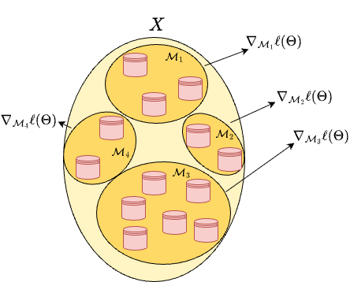

Stochastic Gradient Descent (SGD)#
When training a Machine Learning model, we typically deal with a dataset
and a parametric model \( f_\Theta(x) \) whose parameters \(\Theta \in \mathbb{R}^d\) (also called weights) must be learned.
The training phase is formulated as an optimization problem, where we seek parameters \(\Theta\) such that
To quantify this approximation, we introduce a loss function \(\mathcal{L}(\Theta) := \mathcal{L}(\Theta; X, Y)\), which measures how far the model predictions are from the true targets.
Empirical Risk Minimization#
In most ML problems, the loss can be expressed as a sum (or average) over sample-wise losses:
where \(\ell_i\) quantifies the error for the \(i\)-th training sample.
The training optimization problem becomes:
The Gradient Descent (GD) method (from previous section) updates the parameters iteratively as:
Here \(\eta_k > 0\) denotes the learning rate (or step size).
Example: Mean Squared Error (MSE)#
A common loss in regression problems is the Mean Squared Error (MSE):
By the chain rule:
so that:
Therefore, one iteration of Gradient Descent becomes:
Motivation for Stochastic Gradient Descent#
While the computation of each \(\nabla_\Theta \ell_i(\Theta; x^{(i)}, y^{(i)})\) is inexpensive, the full gradient \(\nabla_\Theta \mathcal{L}(\Theta; X, Y)\) requires summing over all \(N\) samples, which is a prohibitive cost when \(N\) is very large.
The Stochastic Gradient Descent (SGD) algorithm addresses this by replacing the exact gradient with a stochastic approximation computed on a random subset of data (a mini-batch).
The SGD Algorithm#
Let \(N_\text{batch} \ll N\) be the batch size, and let \(\mathcal{M}_k \subset \{1,\dots,N\}\) denote a random subset of indices such that \(|\mathcal{M}_k| = N_\text{batch}\).
At each iteration \(k\):
Sample a mini-batch:
Randomly select a subset \(\mathcal{M}_k\) (a batch) from the dataset (typically without replacement).Compute the approximate gradient:
\[ \nabla_\Theta \mathcal{L}(\Theta^{(k)}; \mathcal{M}_k) = \frac{1}{N_\text{batch}}\sum_{i\in\mathcal{M}_k} \nabla_\Theta \ell_i(\Theta^{(k)}; x^{(i)}, y^{(i)}). \]Update the parameters:
\[ \Theta^{(k+1)} = \Theta^{(k)} - \eta_k \, \nabla_\Theta \mathcal{L}(\Theta^{(k)}; \mathcal{M}_k). \]Repeat until all data have been used once.
When the entire dataset has been processed, we say one epoch of SGD has been completed.
The algorithm is typically run for a fixed number \(E\) of epochs.

Comparison with Full Gradient Descent#
Property |
Gradient Descent (GD) |
Stochastic Gradient Descent (SGD) |
|---|---|---|
Gradient computation |
Full dataset |
Random subset (mini-batch) |
Iteration cost |
High (depends on \(N\)) |
Low (depends on \(N_\text{batch}\)) |
Variance |
Deterministic |
Stochastic |
Convergence |
Smooth and stable |
Noisy, but often faster |
Scalability |
Poor for large datasets |
Excellent |
The stochasticity introduces noise in the parameter updates, but this noise can help the optimizer escape shallow local minima and often improves generalization.
Typical Implementation#
import numpy as np
def SGD(f, grad_f, X, Y, Theta0, lr=1e-2, batch_size=32, epochs=10):
"""
Simplified Stochastic Gradient Descent (SGD) implementation.
f: loss function, grad_f: gradient wrt Theta
X, Y: dataset
Theta0: initial parameters
lr: learning rate
"""
Theta = Theta0.copy()
N = len(X)
for epoch in range(epochs):
# Shuffle data indices
idx = np.random.permutation(N)
for start in range(0, N, batch_size):
batch_idx = idx[start:start+batch_size]
grad = grad_f(Theta, X[batch_idx], Y[batch_idx])
Theta -= lr * grad
return Theta
Remarks#
The batch size controls the trade-off between computational cost and gradient accuracy.
Small batches introduce more stochastic noise; large batches approach full GD behavior.The learning rate \(\eta_k\) is usually constant or follows a decaying schedule, e.g.
\[ \eta_k = \frac{\eta_0}{1 + \gamma_k}, \quad \gamma > 0. \]In practice, modern optimizers (e.g. Adam, RMSProp) extend SGD with adaptive step-sizes and momentum, which we will discuss later in the course.
Exercise (Mini-Batch Approximation):
For a \(d\)-dimensional input vector \(x^{(i)}\), consider the function\[ > \mathcal{L}(\Theta; X, Y) = \frac{1}{N}\sum_{i=1}^N (\Theta^T x^{(i)} - y^{(i)})^2, > \]where \(\Theta \in \mathbb{R}^d\).
For \(d = 1\), define a synthetic dataset \(X, Y\) where \(X\) is a set of \(N = 100\) evenly-spaced elements in the range \([0, 1]\), while \(Y = 2X + 1 + e\), \(e \sim \mathcal{N}(0, 0.01)\).
Implement Gradient Descent and Stochastic Gradient Descent for this loss.
Compare the number of iterations and the computational cost.
Plot the evolution of the loss across epochs for different batch sizes (\(N_\text{batch} = 1, 10, N\)).
Exercise (Variance of the Stochastic Gradient):
For the same loss of the previous exercise, compute the gradient over multiple random batches \(\mathcal{M}_k\) of the same size, and compare:\[ > \mathrm{Var}\big(\nabla_\Theta \mathcal{L}(\Theta; \mathcal{M}_k)\big) > \]as a function of the batch size.
Discuss how increasing \(N_\text{batch}\) affects the variance and the convergence stability.
Exercise (Learning Rate Scheduling):
Implement SGD on the same dataset with three learning-rate strategies:
constant \(\eta_k=\eta_0\), exponentially decaying \(\eta_k = \eta_0 \, e^{-\gamma k}\), and inverse scaling \(\eta_k = \frac{\eta_0}{1+\gamma k}\).
Compare convergence rates and discuss which choice balances speed and stability better.
Warning
SGD has some drawbacks compared to GD. In particular, there is no way to check whether it reached the convergence (since we can’t obviously compute the gradient of \(\mathcal{L}(\theta; X, Y)\) to check its distance from zero, as it is required for the first Stopping Criteria) and we can’t use the backtracking algorithm, for the same reason. As a consequence, the algorithm will stop ONLY after reaching the fixed number of epochs, and we must set a good value for the step size \(\alpha_k\) by hand. Those problems are partially solved by recent algorithms like SGD with Momentum, Adam, AdaGrad, …
A Complete Example: Multi-Linear Regression with GD and SGD#
To conclude our discussion on Gradient Descent and its stochastic variant, we now consider a complete example where we will implement both algorithms from scratch (i.e., using only numpy) to solve a multi-linear regression problem on a real dataset.
This exercise will help you understand how both Gradient Descent (GD) and Stochastic Gradient Descent (SGD) behave in a real training scenario and how different choices (e.g., batch size, learning rate) affect convergence.
The Dataset#
We will use the “House Prices – Advanced Regression Techniques” dataset from Kaggle: https://www.kaggle.com/competitions/house-prices-advanced-regression-techniques
The dataset contains various features describing houses (e.g., number of rooms, area, year built) and the sale price as the target variable.
For simplicity, we will use only a few continuous variables, for example:
LotArea(the area of the lot in square feet),OverallQual(an overall quality rating),YearBuilt(the construction year).
Our goal is to predict the house price \(y\) using a linear model:
where \(x \in \mathbb{R}^d\) is the feature vector (including a bias term), and \(\Theta = [\Theta_1, \Theta_2, \Theta_3] \in \mathbb{R}^d\) are the model parameters.
1. Problem Definition#
We define the Mean Squared Error (MSE) loss function as:
where \(X\) is the data matrix of shape \((N, d)\) and \(Y\) the vector of targets. The gradient of the loss with respect to \(\Theta\) is:
2. Data Preprocessing#
The first step is to:
Load the dataset (you can download the
.csvfile from Kaggle),Select only the numerical columns we are interested in,
Normalize them to have mean 0 and variance 1,
Add a bias column of ones to \(X\).
Before delving into the implementation details of these steps, let us discuss the motivation for the last two steps.
Data Normalization#
Before applying any gradient-based optimizer (such as Gradient Descent, Stochastic Gradient Descent, or any variant), it is essential to normalize or standardize the data, because:
Balanced feature scales:
Features measured in different units (e.g., square meters, years, ratings) produce gradients of very different magnitudes, making the loss landscape highly anisotropic and ill-conditioned (as we already saw in the previous section).Faster and smoother convergence:
Centering and scaling features makes the contours of the loss more spherical, helping gradient-based methods move more directly toward the minimum.
Hence, we always standardize both the features and the target in regression tasks:
After training, predictions can be denormalized back to the original scale.
The bias column#
To simplify the implementation of the SGD method and make the resulting algorithm independent on the dimensionality \(d\) of the input space, we consider the matrix formulation of the optimization problem, where the model \(f_\Theta(x^{(i)})\) reads:
Note that, while this formulation leads to more flexible implementation, the resulting model loses access to the bias term (sometimes called quote) compared to the scalar formulation:
To recover that term, a typical solution is to add an artificial dummy column on \(X\), composed of all \(1\)s, so that:
and:
effectively recovering the bias term.
We can now move to implementing the data preprocessing step for our example problem.
import numpy as np
import pandas as pd
# Load the dataset (download from Kaggle first)
df = pd.read_csv("data/train.csv")
# Select some useful continuous features
features = ["LotArea", "OverallQual", "YearBuilt"]
X = df[features].values
Y = df["SalePrice"].values.reshape(-1, 1)
# Normalize features
X = (X - X.mean(axis=0)) / X.std(axis=0)
Y = (Y - Y.mean(axis=0)) / Y.std(axis=0)
# Add bias term
X = np.hstack([np.ones((X.shape[0], 1)), X])
N, d = X.shape
print(f"Dataset size: {N} samples, {d} features (including bias)")
Dataset size: 1460 samples, 4 features (including bias)
3. Implementing Gradient Descent#
We now implement Gradient Descent using the formula
def l(Theta, X, Y):
N = len(Y)
residuals = X @ Theta - Y
return (residuals**2).mean()
def grad_l(Theta, X, Y):
N = len(Y)
return (2/N) * X.T @ (X @ Theta - Y)
def gradient_descent(l, grad_l, Theta0, X, Y, lr=1e-3, epochs=500):
Theta = Theta0
losses = []
for k in range(epochs):
grad = grad_l(Theta, X, Y)
Theta -= lr * grad
losses.append(l(Theta, X, Y))
return Theta, losses
4. Implementing Stochastic Gradient Descent#
For SGD, at each iteration we approximate the full gradient by sampling a random mini-batch \(\mathcal{M}_k\) of size \(N_\text{batch}\):
def sgd(l, grad_l, Theta0, X, Y, batch_size=64, lr=1e-3, epochs=500):
Theta = Theta0
N = len(Y)
losses = []
for epoch in range(epochs):
indices = np.random.permutation(N)
for start in range(0, N, batch_size):
batch_idx = indices[start:start+batch_size]
Xb, Yb = X[batch_idx], Y[batch_idx]
grad = grad_l(Theta, Xb, Yb)
Theta -= lr * grad
losses.append(l(Theta, X, Y))
return Theta, losses
5. Training and Comparison#
We can now train both algorithms and compare their convergence.
# Run both GD and SGD
Theta_gd, loss_gd = gradient_descent(l, grad_l, np.zeros((X.shape[1], 1)), X, Y,lr=1e-3, epochs=500)
Theta_sgd, loss_sgd = sgd(l, grad_l, np.zeros((X.shape[1], 1)), X, Y, batch_size=64, lr=1e-3, epochs=500)
import matplotlib.pyplot as plt
plt.plot(loss_gd, label="GD")
plt.plot(loss_sgd, label="SGD")
plt.xlabel("Epochs")
plt.ylabel("Loss")
plt.legend()
plt.title("Convergence of GD vs. SGD")
plt.grid(alpha=0.3)
plt.show()
6. Discussion#
Gradient Descent (GD) computes the exact gradient at each iteration, ensuring smooth convergence, but is computationally expensive for large datasets.
SGD, by using mini-batches, introduces stochastic noise in the updates but drastically reduces computational cost per iteration.
This noise can even help avoid getting stuck in local minima (for non-convex problems) and improves generalization.The learning rate and batch size jointly control the trade-off between convergence speed and stability.
You should experiment with:
Different values of
lr(e.g.,1e-2,5e-4),Different batch sizes (
N_batch = 1, 32, 128, N),
7. Questions for Reflection#
Compare the convergence curves of GD and SGD. Which is smoother? Which converges faster in terms of time per epoch?
How does batch size influence the final convergence point and oscillations?
If you replace the fixed learning rate with a decaying schedule (e.g. \(\eta_k = \frac{\eta_0}{1+k}\)), how does the behavior change?
Compute the norm of the final gradient \(\|\nabla_\Theta \mathcal{L}(\Theta^{(E)}; X, Y)\|\) for both algorithms and interpret its value.
Plot the value of \(\|\nabla_\Theta \mathcal{L}(\Theta^{(k)}; X, Y)\|\) along the iterations for the two methods and discuss the behavior.
This exercise consolidates all the concepts discussed so far:
decomposition of the loss as a sum over samples,
explicit computation of gradients,
iterative updates via Gradient Descent and SGD,
and the trade-offs between accuracy, stability, and computational cost.
Adam: Adaptive Moment Estimation#
Adam is an optimization algorithm that improves on standard SGD by using both momentum (to accelerate convergence) and adaptive learning rates (to handle parameters with different scales).
Given a stochastic gradient at iteration \(k\),
Adam maintains two exponential moving averages (EMAs):
After correcting the initialization bias:
the parameter update is:
Typical choices: \(\beta_1=0.9, \; \beta_2=0.999, \; \varepsilon = 10^{-8}\).
Implementing Adam on the House Prices dataset#
We reuse the Kaggle House Prices dataset and we solve the same optimization problem as before with Adam.
import numpy as np
import pandas as pd
# Load the dataset
df = pd.read_csv("data/train.csv")
# Select features
features = ["LotArea", "OverallQual", "YearBuilt"]
X = df[features].values
Y = df["SalePrice"].values.reshape(-1, 1)
# Normalize the data
X_mean, X_std = X.mean(axis=0), X.std(axis=0)
Y_mean, Y_std = Y.mean(), Y.std()
X = (X - X_mean) / X_std
Y = (Y - Y_mean) / Y_std
# Add bias column
X = np.hstack([np.ones((X.shape[0], 1)), X])
N, d = X.shape
def l(Theta, X, Y):
residuals = X @ Theta - Y
return (residuals**2).mean()
def grad_l(Theta, X, Y):
N = len(Y)
return (2/N) * X.T @ (X @ Theta - Y)
Adam Optimizer (with mini-batches)#
def adam(l,
grad_l,
Theta0,
X, Y,
beta1=0.9, beta2=0.999, eps=1e-8,
batch_size=64,
lr=1e-3,
epochs=500):
N, d = X.shape
Theta = Theta0.copy()
m = np.zeros_like(Theta)
v = np.zeros_like(Theta)
t = 0
losses = []
for epoch in range(epochs):
idx = np.random.permutation(N)
for start in range(0, N, batch_size):
batch_idx = idx[start:start+batch_size]
Xb, Yb = X[batch_idx], Y[batch_idx]
g = grad_l(Theta, Xb, Yb)
# Adam updates
t += 1
m = beta1 * m + (1 - beta1) * g
v = beta2 * v + (1 - beta2) * (g * g)
m_hat = m / (1 - beta1**t)
v_hat = v / (1 - beta2**t)
Theta -= lr * (m_hat / (np.sqrt(v_hat) + eps))
losses.append(l(Theta, X, Y))
return Theta, losses
Comparison: SGD vs. Adam (with standardized data)#
# Train both
Theta_sgd, loss_sgd = sgd(l, grad_l, np.zeros((X.shape[1], 1)), X, Y, batch_size=64, lr=1e-3, epochs=100)
Theta_adam, loss_adam = adam(l, grad_l, np.zeros((X.shape[1], 1)), X, Y, lr=1e-3, batch_size=64, epochs=100)
import matplotlib.pyplot as plt
plt.plot(loss_sgd, label="SGD")
plt.plot(loss_adam, label="Adam")
plt.xlabel("Epoch")
plt.ylabel("Normalized MSE Loss")
plt.title("SGD vs. Adam on Standardized Data")
plt.legend()
plt.grid(alpha=0.3)
plt.show()
Discussion#
After standardization:
Both SGD and Adam converge smoothly and to nearly identical minima.
Adam usually shows faster initial loss reduction due to its adaptive scaling of gradients.
Without normalization, the gradient magnitudes differ across parameters, causing Adam’s per-parameter learning rates to explode or vanish.
In normalized space, the curvature of the loss is more uniform, allowing adaptive methods like Adam to perform as intended.
Finally, when producing predictions in the original scale, remember to denormalize the output: